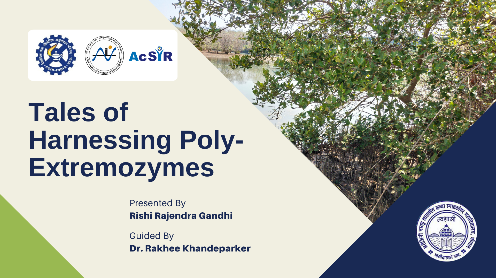
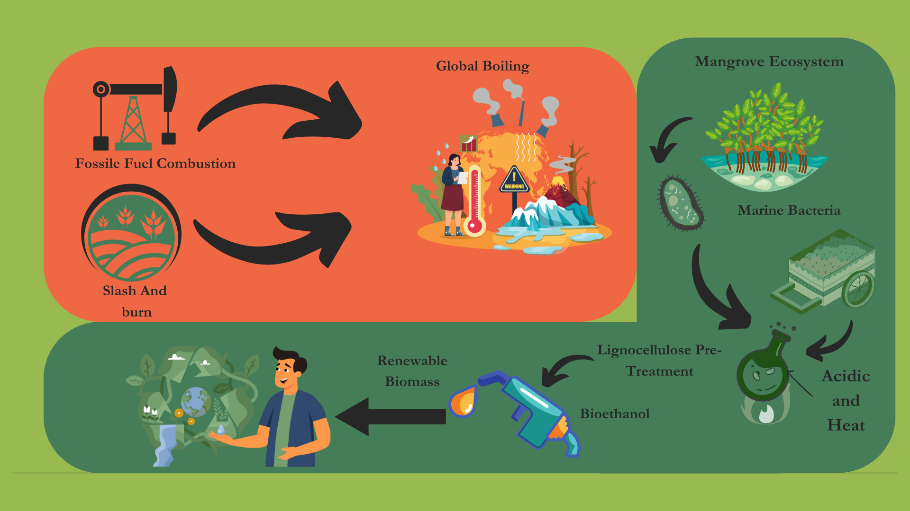
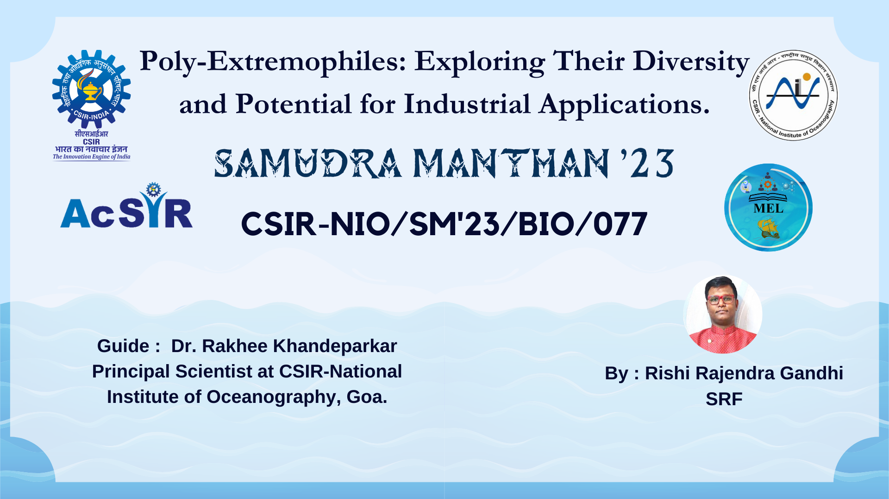
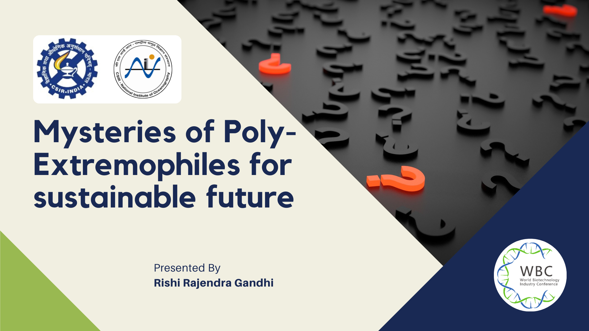
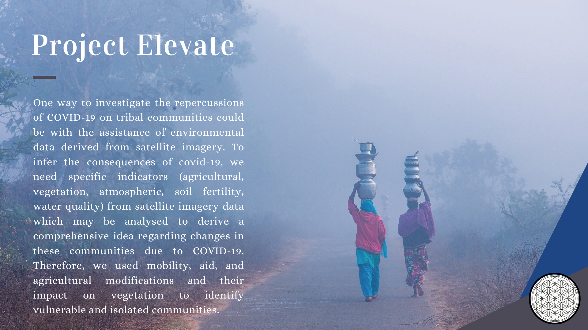
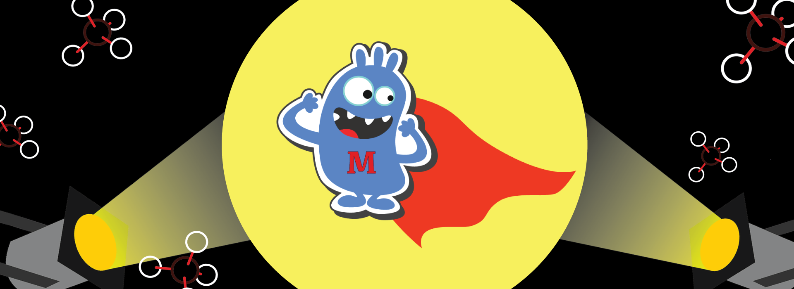

Presentations
Oral
March 2025

Tales of Harnessing Poly-Extremozymes
Presented at the International Conference on extremozymes and their importance.
Conference: Current Perspectives on Extremophiles and their Biomolecules
Mode: Online
Location: Bhopal, India
Conference Link
Poster
February 2025

Poly-extremophilic Cellulases: Goan Mangroves' Answer to Climate-Friendly Biofuels
Presented research on developing solutions for fossil fuels.
Conference: OSICON 2025
Mode: Offline
Location: Panaji, India
Conference Link
Oral and Poster
September 2023

Poly-Extremophiles: Exploring Their Diversity and Potential for Industrial Applications
Research on effective bioprospecting of extremophiles.
Conference: Samudramanthan 2023
Mode: Offline
Location: Panaji, India
Conference Link
Oral
September 2022

Mysteries of Poly-Extremophiles for Sustainable Future
Mysteries of Poly-Extremophiles for Sustainable Future.
Conference: World Biotechnology Industry Conference-2022
Mode: Online
Location: Qingdao, China
Conference Link
Poster
June 2021

Analysing the effects of COVID 19 on Tribal Communities based on Environmental Parameters
Research on environmental impacts of the pandemic on vulnerable communities.
Hackathon: EO Dashboard Hackathon
Mode: Online
Location: Global
Hackathon Link
Poster and Oral
Oct 2018

MethNote-A prototype of Methane Biosensor
Presented at iGEM Giant Jamboree in Boston, USA.
Conference: iGEM Giant Jamboree
Mode: Offline
Location: Boston, USA
Conference Link